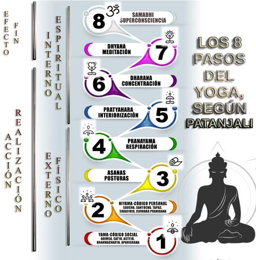

La rama de yoga que practicamos, Vinyasa Yoga, proviene del Ashtanga Yoga.
Ashtanga se traduce como «Los Ocho Pasos» y son ocho aspectos
que se cree que un Yogui debe practicar y desarrollar para llegar a la plenitud.
Como en una procesión o una escalera, estancia del sendero
prepara al cuerpo y a la mente para la iluminación